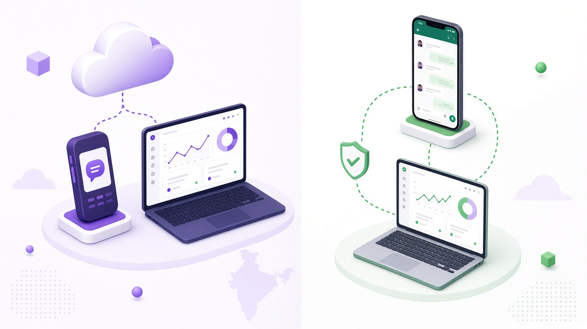

How to Connect a WhatsApp Number to a Broadcasting Platform: Cloud API vs Coexistence
A practical guide for new and existing businesses: Standard Cloud API vs Coexistence, what to prepare, verification, limits, and when you can send your first approved campaign.

- Understand the two ways to connect WhatsApp
- What do you need before connecting your number?
- How to connect a new number using Standard Cloud API
- How to connect your existing WhatsApp Business App number using Coexistence
- What if your number is already connected to another API provider?
- Which verification is actually required?
- When can you actually send your first broadcast?
- Do you need customer permission before sending broadcasts?
- What are the initial WhatsApp messaging limits?
- Understand WhatsApp API charges before launching campaigns
- Common mistakes to avoid during WhatsApp onboarding
- Frequently asked questions
- Final checklist before your first campaign
- Conclusion
- Official and technical references
Customer onboarding · guide. This walkthrough is for businesses connecting a WhatsApp number through a supported WhatsApp Business Platform provider such as Samyoj (Meta Tech Provider on Cloud API). Samyoj software is ₹899/month for WhatsApp-only or ₹1,499/month for multi-channel — plus Meta message charges at actuals. Final eligibility and screen labels are controlled by Meta and your provider.
Connecting your WhatsApp number to a broadcasting platform can help your business manage customer conversations, send updates, and run marketing campaigns from one place.
But there is one important thing to understand before you start.
You cannot simply connect any WhatsApp number to any bulk messaging tool and start sending campaigns.
WhatsApp Business Platform has its own registration process, account requirements, messaging rules, and sending limits. Choosing the wrong connection method can also affect your existing WhatsApp Business account.
For example, some businesses want a completely new API number, while others want to continue using their existing WhatsApp Business App number.
These are two different situations, and the setup process is not the same.
In this guide, we will walk through the complete process in simple terms, including:
- WhatsApp Cloud API vs WhatsApp Coexistence
- Which phone number you should use
- What you need before starting
- How Meta Embedded Signup works
- Phone verification and business verification
- How message templates and customer opt-in work
- Initial messaging limits and scaling
- When you can send your first broadcast
Let’s start with the most important decision.
1. Understand the two ways to connect WhatsApp
There are two common ways to connect a business phone number to the WhatsApp Business Platform.
Option A: Standard WhatsApp Cloud API
This option is suitable for businesses that want to manage WhatsApp conversations through a CRM, broadcasting platform, or customer support dashboard.
You register an eligible phone number with the WhatsApp Business Platform and use an API-connected software platform to manage your messages.
The number is generally managed through the API instead of continuing to use the WhatsApp mobile app on that same number.
Choose this method when:
- You are starting with a new API number.
- You want your team to manage conversations through a shared dashboard.
- You want to connect WhatsApp with your CRM or internal software.
- You do not need to keep using the WhatsApp Business App on the same number.
Option B: WhatsApp Coexistence
Coexistence is useful for businesses that already use WhatsApp Business App and do not want to completely move away from it.
With an eligible number, you can connect the same WhatsApp Business App account to the WhatsApp Business Platform.
This allows you to continue using the mobile app for supported individual conversations while using a connected platform for API messaging and campaigns.
Choose this method when:
- Your business already has an active WhatsApp Business App number.
- Customers regularly contact you on that number.
- You want to retain access to the mobile app.
- You want API-based messaging without immediately replacing your existing setup.
Coexistence is not available for every number. Meta and the connected provider determine eligibility.
Cloud API vs Coexistence: What is the difference?
| Feature | Standard Cloud API | Coexistence |
|---|---|---|
| Use a new API number | Yes | Not required |
| Existing Business App number | Requires a separate transition if already in use | Supported if eligible |
| Continue using Business App | No, on the same standard API registration | Yes, with supported features |
| API campaigns | Yes | Yes |
| CRM integration | Yes | Yes |
| Meta messaging charges | Apply | Apply to API messages |
| Existing app chat access | No continued app access on that number | Supported history sync may be available |
| Eligibility requirements | Standard number registration | Additional app-account eligibility |
Important: Coexistence does not mean every WhatsApp Business App feature will continue working exactly as before. Some linked devices or app features may be affected. Ask your provider for its current Coexistence feature limitations before connecting your main business number.
2. What do you need before connecting your number?
Preparing the necessary information first can save you from repeated signup attempts.
You do not need to be a large company to begin. However, you should have accurate business information and access to the accounts being connected.
A. Meta Business Portfolio
You should have access to the Meta Business Portfolio that belongs to your business.
A Business Portfolio is where Meta manages your business assets, permissions, and related accounts.
Prepare:
- Facebook login with the required administrator access.
- Access to the business-owned Meta Business Portfolio.
- Business name and category.
- Business email address.
- Legal business name and address.
- Business phone number.
- Website, where requested by the signup flow or provider.
If you do not have a Business Portfolio, you may be able to create one during Embedded Signup.
My recommendation: If your business already has a Meta Business Portfolio, use that one instead of creating unnecessary duplicate portfolios. Select the correct business because changing portfolio ownership or moving a registered number later can require additional work.
B. A suitable phone number
Your phone number is an important part of the registration process.
For Standard Cloud API registration, you need a number eligible for WhatsApp Business Platform registration and capable of receiving the required verification code.
For Coexistence, you need an existing number that is actively registered with WhatsApp Business App and meets the eligibility requirements.
Before continuing, check:
- You control the phone number.
- You can receive an SMS or voice verification code when required.
- You know whether the number is already connected to WhatsApp Messenger, Business App, or another API provider.
- You have selected the correct connection method.
Do not remove an existing WhatsApp account or delete business chats just because a signup screen asks for a phone number. First confirm whether you need Standard API registration, Coexistence, or an approved migration.
C. Business information
Keep your business information accurate and consistent.
You may be asked for:
- Legal business name
- Business address
- Business website
- Business email
- Industry or business category
- WhatsApp display name
Your WhatsApp display name represents your business to customers. It should match your actual brand identity and follow Meta’s display-name requirements.
3. How to connect a new number using Standard Cloud API
This is the usual path when you want a dedicated API number.
The setup is completed through your chosen WhatsApp Business Platform provider and Meta’s secure Embedded Signup flow.
Step 1: Open your broadcasting platform
Log in to the platform where you want to manage your WhatsApp campaigns.
Find the WhatsApp connection option. Depending on the provider, it may appear under:
- Settings
- Channels
- WhatsApp Integration
- Connect WhatsApp
- Add New Channel
Choose the Standard Cloud API or new-number registration option.
Step 2: Continue with Meta signup
The platform will open Meta’s signup flow.
Use the Facebook login belonging to the business owner or an administrator who has permission to manage the relevant assets.
Review the permissions requested by the provider before accepting them.
You may be asked to:
- Select an existing Meta Business Portfolio.
- Create a new Business Portfolio.
- Create or select a WhatsApp Business Account.
- Confirm the business details.
Do not select another person’s personal Business Portfolio just to get through the signup process.
Step 3: Enter your business information
Enter the requested business details.
For a new business, this may include its brand name, country, email, business category, website, legal name, and address.
For an existing business, review the details already stored in Meta and correct anything outdated.
Use genuine information. Incorrect business details can cause verification or onboarding problems later.
Step 4: Set up your WhatsApp profile
Enter the customer-facing WhatsApp display name and business category.
Depending on the signup flow, you may also need a profile description, website, or support contact.
Check the spelling carefully before submitting.
Step 5: Verify the phone number
Meta may send an OTP through SMS or voice call.
Enter the code to confirm ownership of the number.
If the code does not arrive:
- Check that the country code and phone number are correct.
- Confirm that the SIM can receive SMS or calls.
- Check whether the number is already registered elsewhere.
- Wait before requesting another code.
- Contact the platform provider if the issue continues.
Step 6: Complete registration and activation
Finish the remaining authorization steps.
Your provider should confirm when the following are ready:
- WhatsApp Business Account connection
- Phone number registration
- Messaging access
- Billing or payment configuration
- Template synchronization
A successful Facebook login does not automatically mean your number is ready to send campaigns.
Check the final status in your provider dashboard before moving to the next step.
4. How to connect your existing WhatsApp Business App number using Coexistence
This is the route for businesses that want to keep using their existing WhatsApp Business App number.
The most important thing is to check eligibility before starting.
Step 1: Check your existing Business App account
Make sure:
- You are using WhatsApp Business App, not just a personal WhatsApp Messenger account.
- The app is updated to a supported version.
- You can access the primary phone.
- You control the registered number.
- Your account meets the provider’s Coexistence eligibility requirements.
Some providers require the number to have been actively used in WhatsApp Business App for at least seven days.
This is a commonly published provider requirement, not a guarantee that Meta will approve every account after seven days.
Step 2: Start Coexistence signup
Open the WhatsApp connection section of your chosen provider.
Select the option to connect an existing WhatsApp Business App number.
Continue through the Meta signup process and select the correct Business Portfolio.
Step 3: Enter your existing Business App number
Enter the phone number already connected to WhatsApp Business App.
Meta’s signup flow should recognize that the number is associated with the Business App and offer the supported Coexistence path when the account is eligible.
Review the displayed business and profile details carefully.
Step 4: Approve the connection on your phone
Keep your primary phone nearby.
Depending on the flow, WhatsApp may show an in-app approval message, confirmation code, or QR-code step.
Follow the instructions on your phone and approve the connection.
Do not uninstall WhatsApp Business App during this process.
Step 5: Choose whether to sync eligible chats and contacts
Some providers offer optional chat-history and contact synchronization.
Read the prompt carefully before approving it.
Chat-history sync is not necessarily a complete copy of every conversation, media item, or linked-device state. Its availability and supported history depend on Meta’s flow and the provider’s implementation.
Step 6: Confirm that both connections are working
After authorization, verify that:
- The WhatsApp number appears as connected in your platform.
- API messaging is activated.
- Templates are synchronized.
- Billing is configured.
- Your Business App remains accessible.
- Supported individual chats work as expected.
A useful warning about Coexistence: It has feature limitations. For example, current 360dialog documentation states that native Business App broadcast lists become read-only and some linked devices need to be connected again. Confirm the exact limitations with your own provider before moving an important business number.
5. What if your number is already connected to another API provider?
This is a separate situation.
If your phone number is already registered with another WhatsApp Business Platform provider, do not treat it as a new unused number.
You may need a supported WhatsApp Business Account or phone-number migration process, or an approved partner-sharing arrangement.
Before starting, contact your current and intended providers and confirm:
- Who owns or manages the existing WhatsApp Business Account.
- Whether the number can be migrated.
- What happens to existing templates.
- Whether the number’s messaging quality and limits are retained.
- Whether any downtime is expected.
- How billing and payment ownership will change.
Starting the wrong signup flow can create unnecessary delays.
6. Which verification is actually required?
This is one of the most confusing parts of WhatsApp onboarding.
People often use the terms phone verification, Business Portfolio verification, and WhatsApp blue badge as though they mean the same thing.
They are different.
Phone number verification
This confirms that you control the number.
Standard registration commonly uses an SMS or voice OTP. Coexistence uses its supported app-approval process.
Meta Business Verification
This is a separate process that helps Meta verify the identity and legitimacy of a business.
It may not be required before every first message or initial account setup. However, Meta or your provider may request it during onboarding, account reviews, or messaging-limit scaling.
Business verification is also one of the documented paths for increasing the initial messaging limit.
WhatsApp verified badge
A verified badge is not a universal prerequisite for connecting to the WhatsApp Business Platform or sending an approved campaign.
Do not purchase a service just because someone tells you a blue badge is mandatory for basic API access.
Do I need a GST certificate or company registration?
Not as a universal technical requirement for every initial WhatsApp signup.
However, Meta or your provider may request business documents for verification, regulatory checks, or other account requirements. Your business must also comply with applicable local laws.
The safest approach is to enter truthful information and keep supporting documents available.
7. When can you actually send your first broadcast?
Connecting your number is only the first part of the process.
Before sending a promotional campaign, make sure all the required pieces are ready.
First broadcast checklist
- Your WhatsApp number is active.
- The connected WhatsApp Business Account is ready.
- Messaging access is enabled.
- Billing or payment configuration is complete.
- Your marketing template has been approved.
- Your recipient list contains customers who opted in.
- Your available messaging limit covers the campaign.
- Your message variables, links, and contact details have been tested.
A successful signup does not mean you can immediately message an unlimited number of people.
Why do you need an approved message template?
WhatsApp uses message templates for business-initiated conversations outside the 24-hour customer service window.
For example, if your business wants to send a promotional offer to a customer who has not messaged you recently, you need an approved marketing template.
Templates are generally categorized by their purpose:
Marketing templates
Used for promotions, product announcements, offers, event updates, and customer re-engagement.
Utility templates
Used for transactional or account-related updates, such as order confirmations, booking reminders, and delivery updates.
Authentication templates
Used for verification codes, OTPs, and other account-authentication messages.
Choose the correct category. A promotional offer should not be submitted as a utility message simply to try to obtain a different category.
What is the 24-hour customer service window?
When a customer sends your business a WhatsApp message, a 24-hour customer service window opens.
During this window, your business can generally send free-form replies without using an approved template.
The window resets when the customer sends another message.
Outside that window, you must use an approved template to initiate or continue a business conversation.
For this reason, a customer-service conversation and a marketing campaign follow different messaging rules.
8. Do you need customer permission before sending broadcasts?
Yes. This is extremely important.
Having someone’s phone number does not automatically mean that they have agreed to receive promotional WhatsApp messages from your business.
WhatsApp Business Messaging Policy requires businesses to obtain opt-in permission before contacting people, and to respect requests to stop or opt out.
You can collect consent through suitable methods such as:
- A checkbox on your website or checkout page.
- A WhatsApp opt-in form.
- A keyword-based signup.
- A registration form at an event.
- A clear consent process during customer onboarding.
For example:
“I agree to receive order updates, offers, and important announcements from [Business Name] on WhatsApp. I can opt out at any time.”
Make sure the consent wording clearly explains what type of messages the customer is agreeing to receive.
Also maintain a record of when and how consent was collected.
Remember: Importing a contact list is not the same as obtaining customer consent. Never purchase phone-number lists or upload random numbers for promotional campaigns.
9. What are the initial WhatsApp messaging limits?
WhatsApp applies messaging limits to control how many unique customers a business can contact with business-initiated messages outside the customer service window.
The important word here is unique customers.
A limit of 250 does not mean you can only send 250 individual messages in total. It refers to the number of different recipients your business can initiate conversations with within the applicable rolling period.
Many newly created Business Portfolios are currently described by providers as starting at 250 unique recipients in a rolling 24-hour period.
Commonly documented scaling tiers include:
| Messaging tier | Unique recipients |
|---|---|
| Initial tier | 250 |
| Next tier | 2,000 |
| Higher tier | 10,000 |
| Higher tier | 100,000 |
| Maximum tier | Unlimited |
These are general reference tiers, not a guarantee of the limit assigned to every account.
Is the limit shared between phone numbers?
Yes. Under the portfolio-level limit model introduced by Meta, phone numbers in the same Business Portfolio share the available messaging capacity.
For example, if your portfolio has a 250-recipient limit and you use two connected numbers, you should not assume that each number gets a separate 250-recipient allowance.
One number may consume the available capacity for the portfolio.
Can I send the next batch tomorrow?
Messaging limits use a rolling 24-hour window, not simply a reset at midnight.
As earlier recipients move outside the rolling window, capacity may become available again.
Do not plan your campaign around the calendar date alone. Check the actual limit and available capacity in WhatsApp Manager or your provider dashboard.
How can I increase the messaging limit?
Meta’s scaling process considers factors such as business verification, delivered messages, and message quality.
A documented path to the next tier can involve completing business verification or meeting the required high-quality messaging activity criteria.
Further scaling depends on maintaining good message quality and meeting Meta’s usage criteria.
Avoid trying to increase your limit by sending irrelevant or unwanted messages. Poor customer feedback can work against your account.
10. Understand WhatsApp API charges before launching campaigns
Using Coexistence does not make API campaigns free.
Messages sent through the WhatsApp Business Platform are subject to Meta’s pricing rules. Your software provider may also have its own subscription or service fees.
Meta pricing depends on the message category and the recipient’s market.
For businesses in India, pricing changes took effect on 1 October 2026. These include charges for service replies after the monthly free allowance and for utility templates sent within the customer service window.
Before launching a campaign, check:
- Meta’s latest WhatsApp Business Platform rate card.
- Whether the provider charges a separate monthly subscription.
- Whether the provider adds a per-message fee or markup.
- Applicable taxes.
- Your actual expected campaign volume.
Do not rely on an old screenshot or a pricing table from an outdated blog post. Always use the current rate card and your provider’s billing information.
11. Common mistakes to avoid during WhatsApp onboarding
Here are some mistakes that can delay a connection or cause problems after activation.
1. Choosing Standard API when you need Coexistence
If you want to continue using your existing Business App number, check Coexistence eligibility before starting registration.
2. Selecting the wrong Business Portfolio
Always use the business-owned portfolio with the correct administrator access.
3. Assuming seven days guarantees Coexistence approval
Some providers require around seven days of genuine app activity, but Meta makes the final eligibility decision.
4. Trying to send promotional messages without an approved template
A successful number connection does not remove the template requirement.
5. Uploading contacts without consent
A valid phone number is not proof of marketing permission.
6. Ignoring messaging limits
Sending campaigns to more unique recipients than your available limit allows may result in undelivered messages.
7. Using unofficial bulk messaging tools
Avoid tools that promise unlimited WhatsApp broadcasts through browser automation, modified applications, or unofficial APIs. Use an authorized WhatsApp Business Platform integration.
8. Assuming Coexistence preserves every app feature
Check linked-device support, chat-history synchronization, native broadcast-list behavior, and other limitations before connecting your main number.
12. Frequently asked questions
Do I need a Facebook account to connect WhatsApp?
Standard Embedded Signup commonly uses a Facebook login with access to the business-owned Meta Business Portfolio. Alternative login options may exist in certain provider flows and markets, so check your provider’s supported process.
Do I need a Facebook Page or Instagram account?
Not generally for a basic WhatsApp Business Platform connection. You should still prepare your Meta Business Portfolio and accurate business information.
Can I use my personal WhatsApp number?
Personal WhatsApp Messenger and WhatsApp Business App are not interchangeable for Coexistence. Coexistence is designed for eligible WhatsApp Business App accounts. A number already in use in Messenger may require a separate transition for standard API registration.
Can I keep using my existing WhatsApp Business App?
Yes, when your number is eligible and successfully connected through Coexistence. Standard Cloud API registration does not provide continued use of the same number through the normal mobile app.
Will my old WhatsApp chats disappear?
Coexistence may support optional synchronization of eligible chat history and contacts. However, do not assume that every message, media item, linked device, or app feature will transfer exactly as it was.
Back up or preserve important business information and confirm the supported history-sync behavior with your provider before onboarding.
Can I send a broadcast immediately after connecting?
Not necessarily. You need an active number, messaging access, billing readiness, an approved template for business-initiated promotional messages, customer opt-in, and sufficient sending capacity.
Can I send a promotional message without a template?
No, not to initiate a promotional API conversation outside the 24-hour customer service window. You need an approved marketing template.
Can I upload my entire customer contact list?
You can import contacts into a suitable platform, but you may only message people who have provided the required opt-in permission. Importing a number does not mean the customer has consented.
Is WhatsApp Coexistence free?
No. Coexistence allows the Business App and Business Platform to work together on an eligible number. API messages remain subject to Meta’s charges, and the software provider may charge separately.
What if my number is already using another API provider?
You need to follow the supported migration or partner-sharing process. Do not start a fresh registration or assume that the number qualifies for Coexistence.
How long does WhatsApp onboarding take?
There is no universal guaranteed timeline. A straightforward Standard signup may complete quickly, while business-information issues, number eligibility, template review, and provider checks can add time. Coexistence also depends on eligibility.
13. Final checklist before your first campaign
Before launching your first WhatsApp broadcast, make sure you can answer yes to these questions:
- Have I chosen the correct connection method?
- Is my Meta Business Portfolio correctly configured?
- Is the phone number eligible for the selected process?
- Has Meta authorized and activated my number?
- Is my billing configuration ready?
- Is my message template approved?
- Have customers given the required permission?
- Is my recipient list clean and relevant?
- Have I checked the actual messaging limit?
- Have I tested the campaign with a small, appropriate audience?
Once these steps are complete, you are in a much better position to launch your first campaign.
Conclusion
Connecting a WhatsApp number to a broadcasting platform is not just about entering a phone number and clicking Connect.
You first need to understand whether Standard Cloud API or Coexistence is right for your business. Then you need to complete Meta authorization, verify your number, configure billing, prepare approved templates, and make sure your customers have opted in.
The best approach is to start with a small, relevant audience, monitor message quality, and increase campaign volume as your account becomes eligible.
A properly connected WhatsApp number can become an important part of your customer communication workflow. The goal should not simply be to send more messages, but to send useful messages to customers who actually want to receive them.
Official and technical references
- WhatsApp Business Messaging Policy
- WhatsApp Business Platform Terms
- Meta WhatsApp Business Platform Documentation
- Meta WhatsApp Messaging Limits
- Meta WhatsApp Pricing
- 360dialog: Coexistence Onboarding
- 360dialog: Coexistence Features and Limitations
- Twilio: WhatsApp Messaging Limits and Quality Rating
Last reviewed: November 12, 2026. WhatsApp requirements, eligibility, messaging limits, and pricing can change. Always confirm the latest requirements inside Meta’s official tools and with your WhatsApp Business Platform provider.
Editorial disclosure: AI tools assisted with research organization and language editing. The author remains responsible for reviewing the technical details and confirming that the article reflects their understanding and experience.